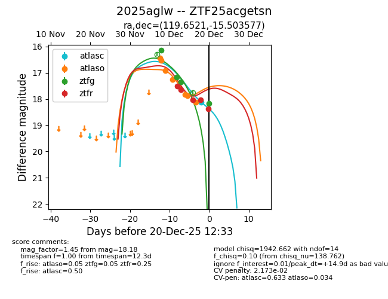
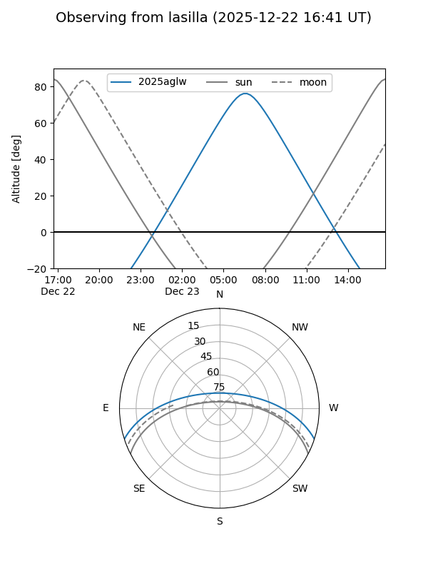
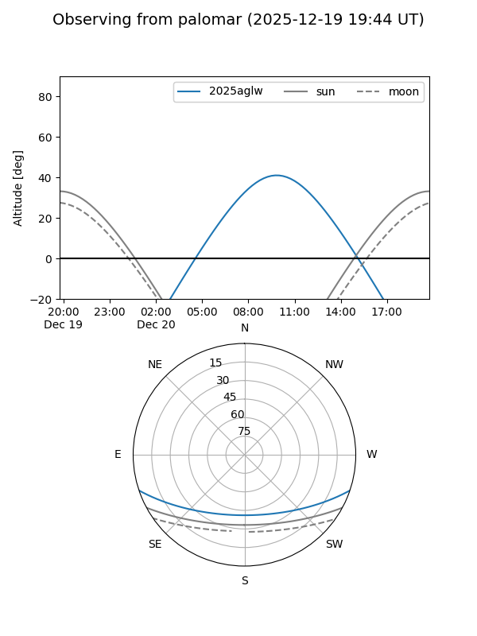
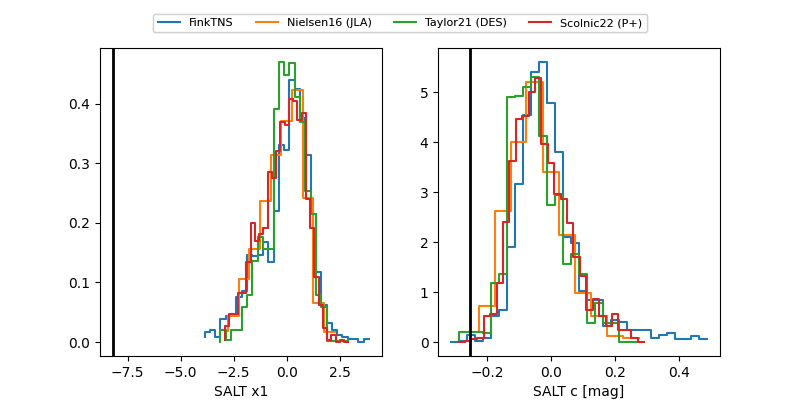

2025aglw
Target 2025aglw at 2025-12-20 10:55
Aliases and brokers:
FINK: fink-portal.org/ZTF25acgetsn
Lasair: lasair-ztf.lsst.ac.uk/objects/ZTF25acgetsn
ALeRCE: alerce.online/object/ZTF25acgetsn
TNS: wis-tns.org/object/2025aglw
YSE: ziggy.ucolick.org/yse/transient_detail/2025aglw
alt names
ZTF25acgetsn (ztf,fink_ztf)
2025aglw (tns,yse)
Coordinates:
equatorial (ra, dec) = 119.6521,-15.50358
equatorial (HMS+DMS) = 07:58:36.50,-15:30:12.88
galactic (l, b) = (234.5096,+7.23190)
Flags:
likely cv
Photometry:
last atlaso=18.14, ztfg=17.36, ztfr=18.38
7 atlaso, 3 ztfg, 5 ztfr detections
Lightcurve

Visibility


Additional plots
